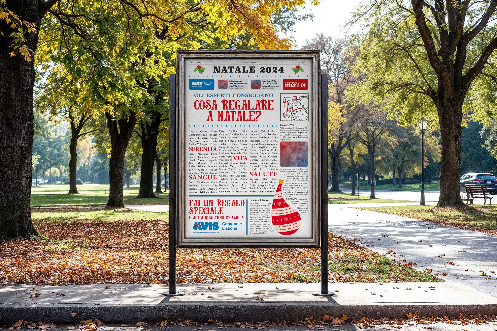
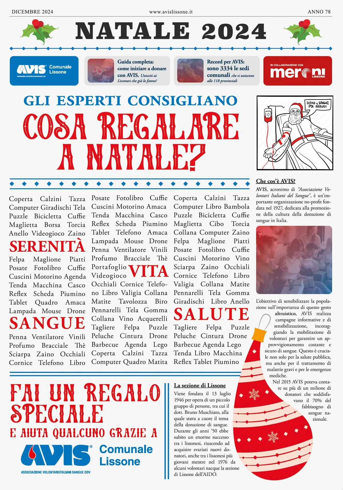

Il distaccamento comunale di Lissone (MB) di AVIS (Associazione Volontari Italiani del Sangue)
richiede la realizzazione di un manifesto per augurare un buon Natale alla comunità lissonese e
sfruttare l'occasione per sensibilizzare alla cultura del dono.
L'elaborato da me
realizzato è
stato classificato al terzo posto del concorso da loro indetto.
L'obiettivo di un manifesto è catturare l'attenzione dei passanti, necessità che viene
amplificata
dal fatto che lo stile grafico-comunicativo di AVIS è da sempre molto statico. È stato quindi
scelto
di adottare un layout inusuale per questo prodotto: una prima pagina di giornale. L'headline
interrogatio richiama l'attenzione del passante che approfondendo la lettura vede spiccare, tra
una
serie di regali natalizi banali, quelli speciali e inusuali che si possono fare donando il
sangue
con AVIS. Gli altri elementi della prima pagina, come le civette o gli articoli di fondo, sono
stati
utilizzati per fornire informazioni sull'associazione AVIS ai lettori più curiosi.
Dicembre 2024
